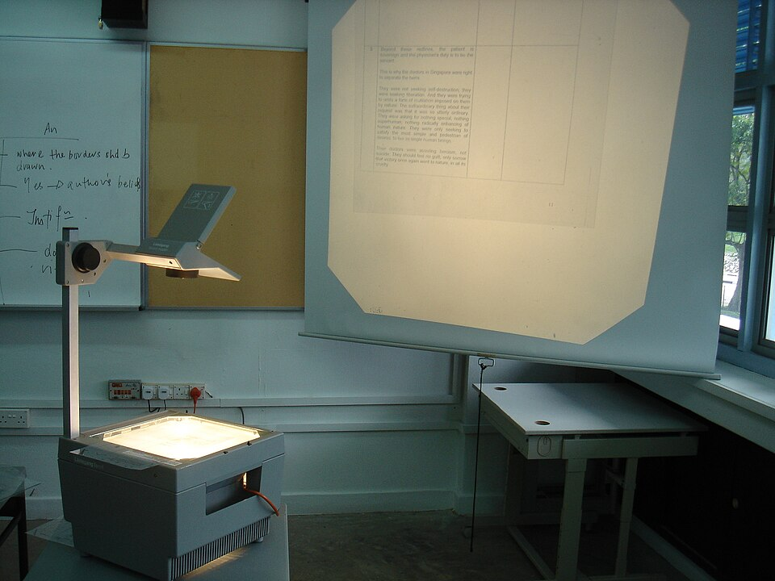

ChiemSeherin
ChiemSeherin
Good morning!
Nur das Schöne wird die Welt retten!
Fjodor Dostojewski
Nicht verzagen, Doc Alvers fragen!
Informatik — Grundkurs 11
Informationen weitergeben
Präsentieren, kommunizieren, gemeinsam arbeiten
Nicht verzagen, Doc Alvers fragen!
Kapitel 01
Präsentieren
Folie, Handout, Vortrag

Nicht verzagen, Doc Alvers fragen!
Wo wir stehen
Letzte Woche: Quellen auswählen — Qualität, Vertrauenswürdigkeit, Zielgruppe
Wer Informationen gefunden und geprüft hat, muss sie weitergeben: im Vortrag, per Nachricht, im gemeinsamen Dokument
Heute: Präsentationstechniken, digitale Kommunikation und Kooperation — Teams und Co.
Leitfrage: Wie kommt eine Information so an, dass andere sie verstehen und nutzen können?
Nicht verzagen, Doc Alvers fragen!
Die Folie
Wichtigstes Ziel: Das Publikum soll die Aussage der Folie sofort erfassen
Eine Folie hat nur wenige Sekunden Aufmerksamkeit
Fließtext stört: Wer gleichzeitig liest und zuhört, versteht beides schlechter
Deshalb Stichpunkte und Bilder auf die Folie — der ausführliche Text gehört ins Handout
Die Folie stützt den Vortrag, sie ersetzt ihn nicht
Nicht verzagen, Doc Alvers fragen!
Folien und Handout
Folien
stützen den Vortrag
Stichpunkte, Bilder, eine Aussage je Folie
ohne den Vortrag oft unverständlich
Handout
Zusammenfassung zum Mitnehmen
auch ohne den Vortrag verständlich
trägt die Aussagen in ganzen Sätzen — eine Seite genügt meistens
Nicht verzagen, Doc Alvers fragen!
Ein Vortrag mit rotem Faden
Bewährte Reihenfolge: Frage aufwerfen, Weg zeigen, Ergebnis benennen
Die Frage macht neugierig und ordnet das Folgende
Der Weg macht das Ergebnis nachvollziehbar — ohne Frage bleibt nur eine Aufzählung
Die letzte Folie zeigt Kernaussage und Quellen — sie steht in der Diskussion am längsten
Nur „Vielen Dank für Ihre Aufmerksamkeit“ verschenkt sie
Nicht verzagen, Doc Alvers fragen!
Barrierefrei gestalten
| Maßnahme | wem sie hilft |
|---|---|
| ausreichender Kontrast | allen — besonders bei Beamerlicht und Sehschwäche |
| echte Überschriften | Screenreadern: Sie navigieren an der Überschriftenstruktur |
| Alternativtext für Bilder | allen, die das Bild nicht sehen: Er wird vorgelesen |
| Farbe nie als einziges Merkmal | Menschen mit Farbfehlsichtigkeit |
Der Alternativtext beschreibt kurz die Aussage des Bildes, nicht jedes Detail
Rein dekorative Bilder bekommen einen leeren Alternativtext
Nicht verzagen, Doc Alvers fragen!
Wenn die Technik streikt
Kabel, Auflösung und Netz sind die üblichen Stolpersteine
Immer vorbereiten: einen Plan für den Ausfall
Ein Ausdruck oder die Datei auf einem Stick rettet den Termin
Wer den Ausfall eingeplant hat, bleibt ruhig
Nicht verzagen, Doc Alvers fragen!
Kapitel 02
Kommunizieren
Synchron und asynchron, Mail und Konferenz
Nicht verzagen, Doc Alvers fragen!
Synchron oder asynchron?
| Merkmal | synchron | asynchron |
|---|---|---|
| Zeit | gleichzeitig | zeitversetzt |
| Beispiele | Telefonat, Videokonferenz | E-Mail, Forum, Kommentar im Dokument |
| Stärke | schnelle Klärung | Zeit zum Nachdenken und Nachschlagen |
| Schwäche | alle müssen zugleich da sein, es unterbricht | die Antwort kommt später |
Asynchron ist besser, wenn die Antwort Nachdenken braucht — für Dringendes lieber das Gespräch
Nicht verzagen, Doc Alvers fragen!
Gute E-Mails
Der Betreff nennt den Gegenstand und, wenn nötig, die erwartete Handlung
„Frage“ sagt nichts — „Termin Projektabgabe: Rückmeldung bis Fr“ schon
Name und Datum braucht der Betreff nicht — sie stehen ohnehin in den Kopfdaten
Große Anhänge vermeiden: Sie belasten Postfächer und scheitern an Größengrenzen — besser ein Link
Ergebnisse als PDF weitergeben: Die Darstellung bleibt auf jedem Gerät gleich
Nicht verzagen, Doc Alvers fragen!
Netiquette und Videokonferenz
Netiquette: Regeln für höflichen und sachlichen Umgang in digitaler Kommunikation
Kein Gesetz, aber Voraussetzung für Zusammenarbeit — im Konflikt: sachlich bleiben, nicht sofort antworten
Häufigste vermeidbare Störung in der Videokonferenz: offene Mikrofone
Sie erzeugen Nebengeräusche und Rückkopplung
Stummschalten als Grundeinstellung — Kopfhörer verhindern die Rückkopplung
Nicht verzagen, Doc Alvers fragen!
Kapitel 03
Zusammenarbeiten
Ein Dokument, viele Hände
Nicht verzagen, Doc Alvers fragen!
Kopien schicken oder gemeinsam arbeiten?
Kopien per Mail
jede Person hat eine eigene Fassung
Änderungen müssen zusammengeführt werden
am Ende die Frage: Welche Fassung gilt?
Kollaborativ
mehrere bearbeiten dieselbe Fassung
es gibt genau eine gültige Fassung
Änderungen sind sichtbar und rückverfolgbar
Nicht verzagen, Doc Alvers fragen!
Versionen und Kommentare
Die Versionsgeschichte zeigt, was wann geändert wurde — und kann es zurücknehmen
Jeder Stand bleibt erreichbar: Versehentliche Löschungen sind kein Drama mehr
Rückmeldungen als Kommentar am Text — so bleiben Vorschlag und Stelle zusammen
Kommentare lassen sich abarbeiten und schließen
Stilles Überschreiben nimmt der Autorin die Entscheidung
Nicht verzagen, Doc Alvers fragen!
Ordnung im Team
| Regel | Beispiel | Nutzen |
|---|---|---|
| Dateinamen-Schema | 2026-11-10_projektplan_v2 | auffindbar ohne Nachfragen |
| Datum als JJJJ-MM-TT | 2026-11-10 | sortiert sich von selbst |
| Ordnerstruktur | nach Aufgaben, nicht zu tief | jede Person findet, was sie braucht |
| Rechte | lesen, bearbeiten, verwalten | jede Person sieht nur, was sie sehen darf |
Einheitlichkeit wirkt erst, wenn alle mitmachen
Nicht verzagen, Doc Alvers fragen!
Welches Werkzeug wofür?
| Ziel | passendes Werkzeug |
|---|---|
| schnelle Absprache im Team | Chat oder kurzes Gespräch |
| verbindliche Info an viele | E-Mail mit klarem Betreff |
| gemeinsamer Text | geteiltes Dokument mit Versionen und Kommentaren |
| Ergebnis vorstellen | Präsentation plus Handout |
| Ergebnis weitergeben | PDF oder Link auf die abgelegte Datei |
Plattformen wie Teams bündeln Chat, Konferenz und Dateiablage — die Regeln bleiben dieselben
Nicht verzagen, Doc Alvers fragen!
Wer Informationen weitergibt, denkt vom Empfänger her: klare Folien und ein Handout für das Publikum, der passende Kanal für die Nachricht — und eine einzige gemeinsame Fassung für das Team.
Merksatz
Nicht verzagen, Doc Alvers fragen!
Fun Facts
Ray Tomlinson verschickte 1971 die erste E-Mail zwischen zwei Rechnern — und wählte dafür das @
Die erste E-Mail in Deutschland kam im August 1984 an der Universität Karlsruhe an
PowerPoint hieß in der Entwicklung „Presenter“ und erschien 1987 zuerst für den Macintosh
Das Datumsformat JJJJ-MM-TT ist ein internationaler Standard: ISO 8601
Nicht verzagen, Doc Alvers fragen!
Eure Aufgabe
Kurzpräsentation (3 Minuten) zu einem Thema aus eurer Recherche: Frage, Weg, Ergebnis — höchstens drei Folien
Legt vorher eure Zielgruppe fest — Mitschüler, Eltern oder Fachpublikum — und passt Sprache und Tiefe an
Werkstatt: Folien gemeinsam in einem geteilten Dokument bauen, Rückmeldungen nur als Kommentar
Peer-Review mit dem Feedbackbogen: Ist die Aussage jeder Folie sofort klar?
Zum Schluss: Aufgaben (20) auf der Planseite — Lösung pro Aufgabe zum Aufklappen
Nicht verzagen, Doc Alvers fragen!